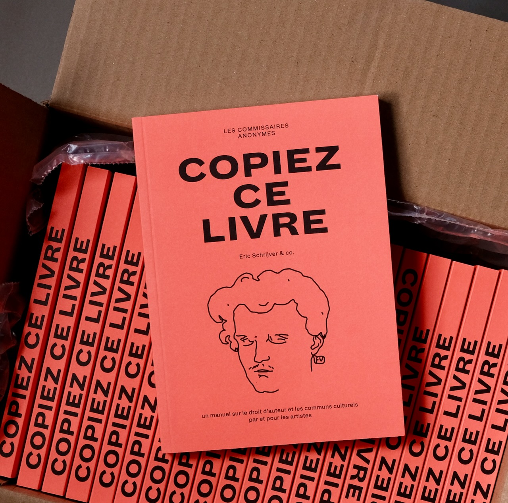
Un guide pratique et critique rédigé par un artiste à l'intention des artistes, des designers, des créateur·ices et des makers, avec lequel le graphiste néerlandais Eric Schrijver, activiste du mouvement du libre, présente sa vision militante du droit d'auteur.
The Belgo-French translation and adaptation of Copy This Book. Distributed by Les presses du réel, published by Les commissaires anonymes.
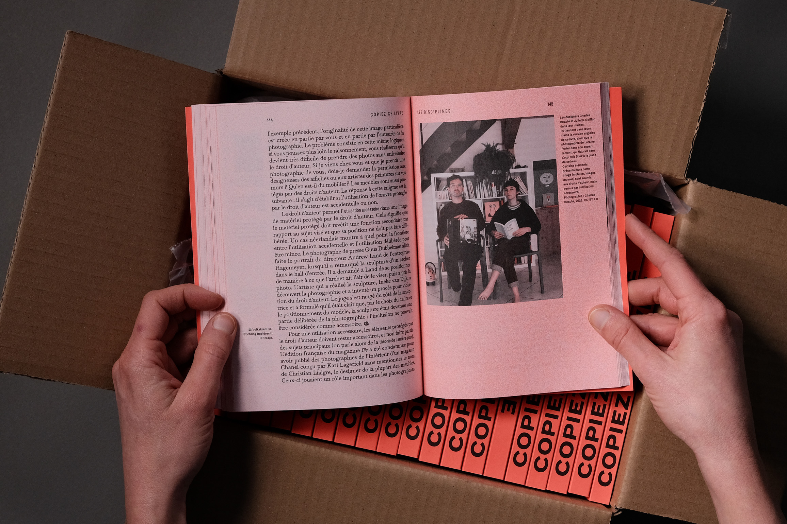
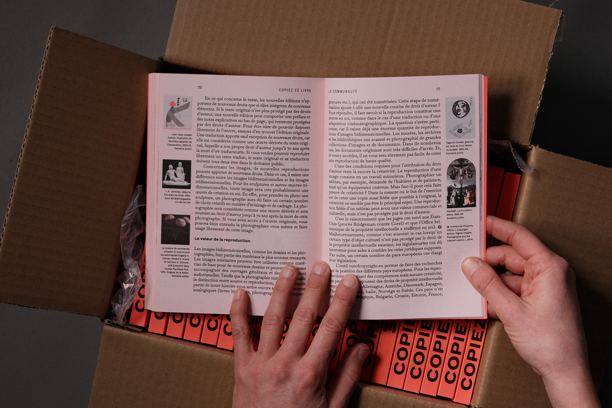
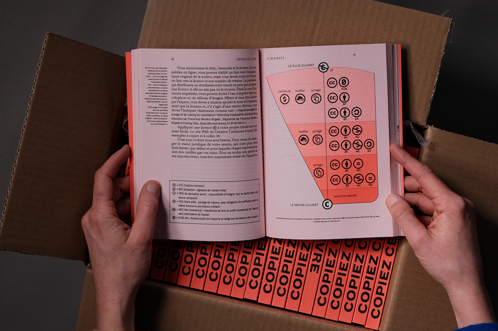
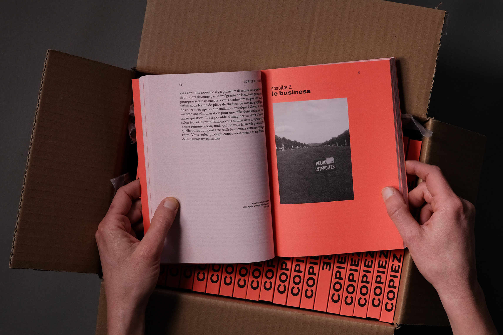
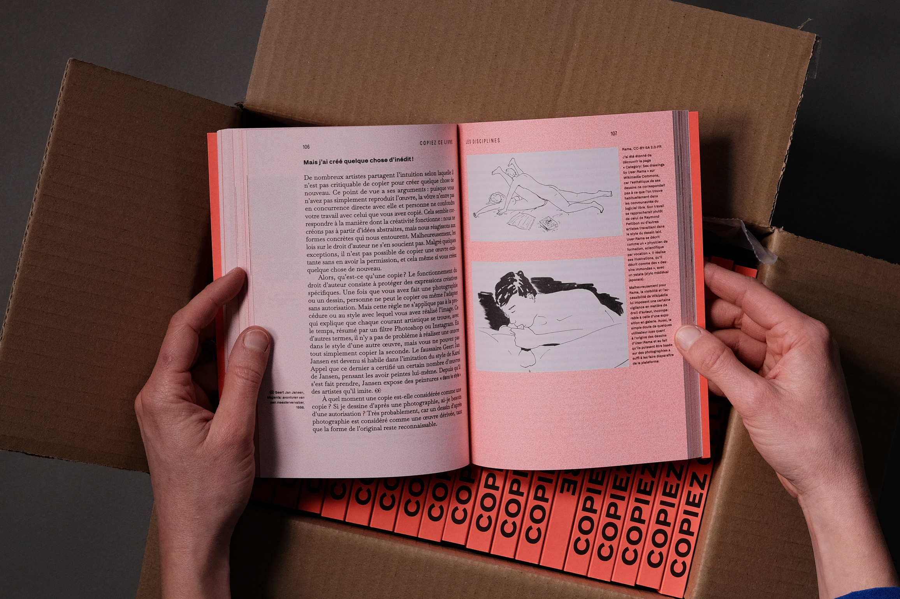
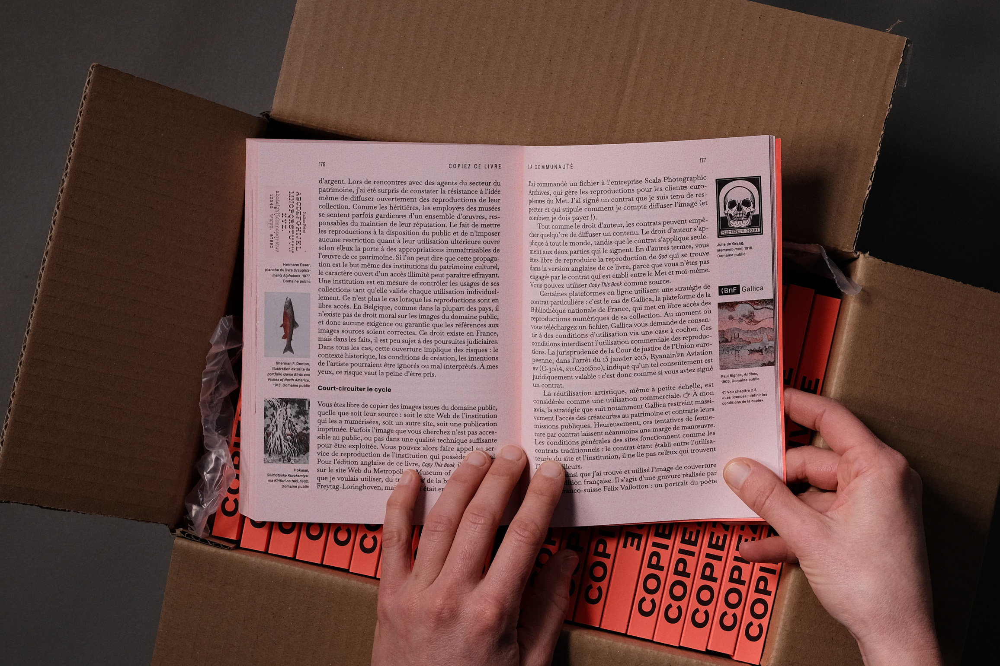
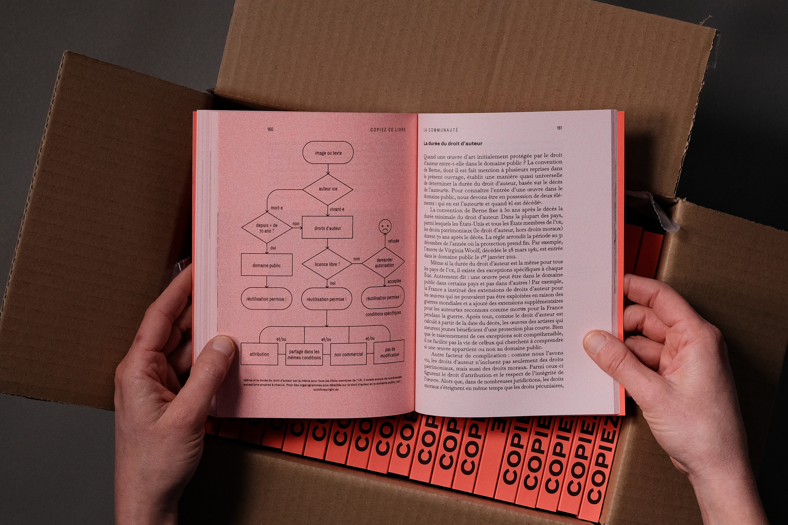
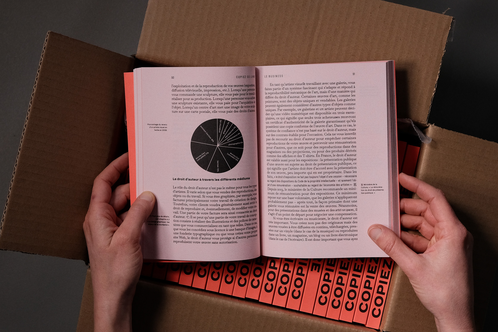
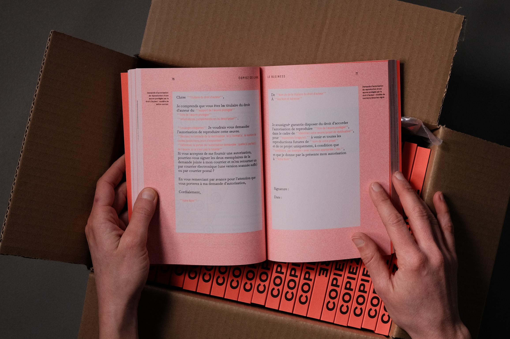
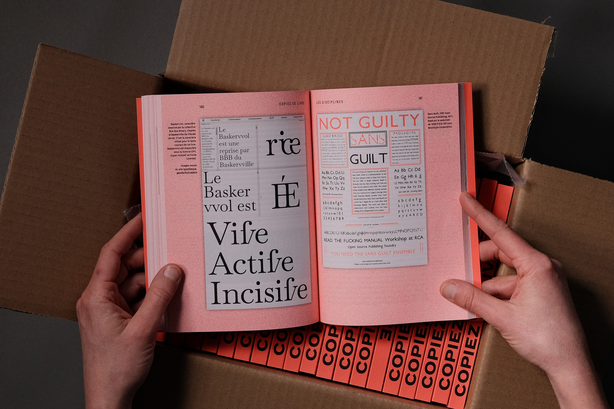
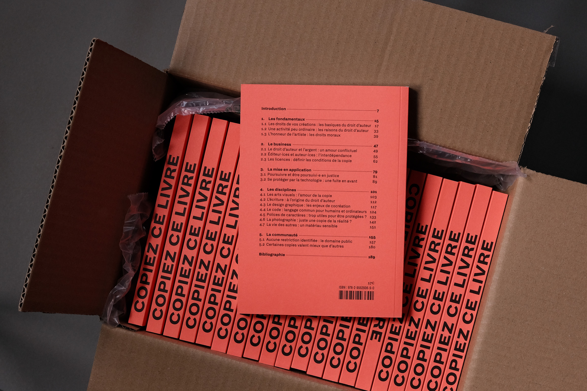
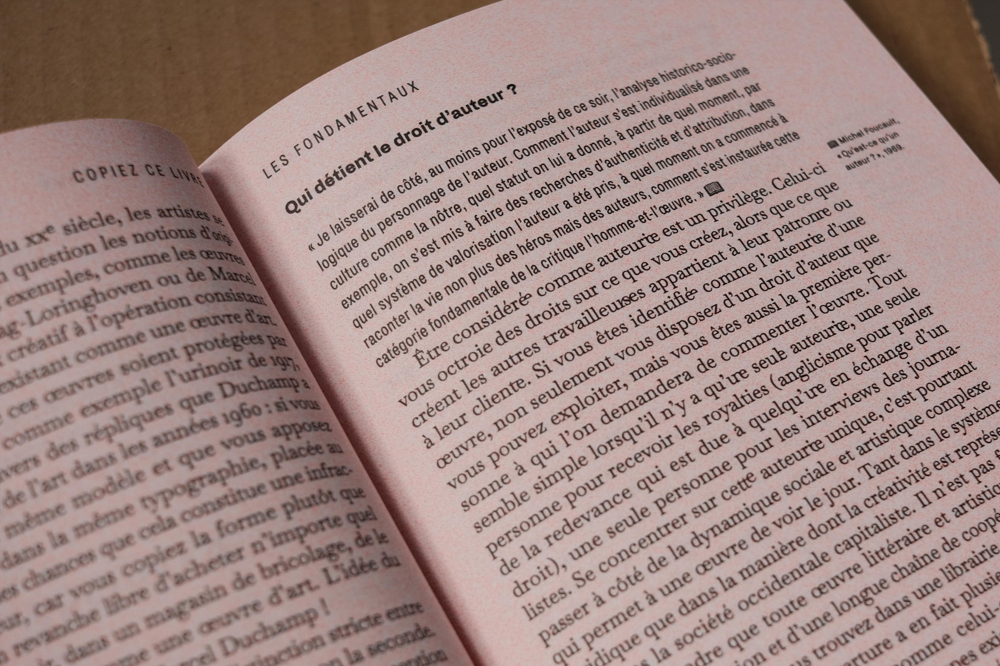
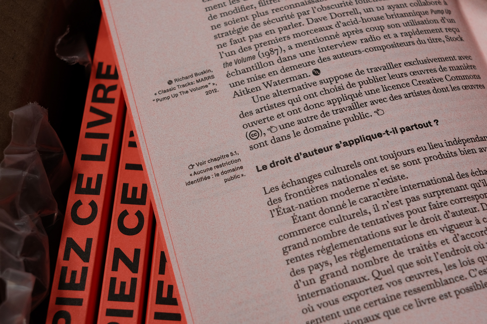